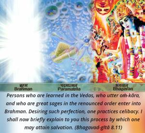
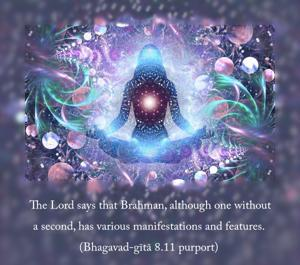
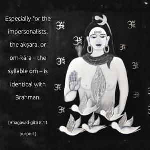
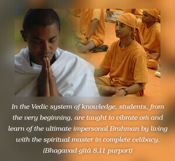
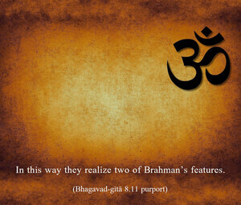

Persons who are learned in the Vedas, who utter oṁ-kāra, and who are great sages in the renounced order enter into Brahman. Desiring such perfection, one practices celibacy. I shall now briefly explain to you this process by which one may attain salvation.





Lord Śrī Kṛṣṇa has recommended to Arjuna the practice of ṣaṭ-cakra-yoga, in which one places the air of life between the eyebrows. Taking it for granted that Arjuna might not know how to practice ṣaṭ-cakra-yoga, the Lord explains the process in the following verses. The Lord says that Brahman, although one without a second, has various manifestations and features. Especially for the impersonalists, the akṣara, or oṁ-kāra – the syllable oṁ – is identical with Brahman. Kṛṣṇa here explains the impersonal Brahman, into which the renounced order of sages enter.
In the Vedic system of knowledge, students, from the very beginning, are taught to vibrate oṁ and learn of the ultimate impersonal Brahman by living with the spiritual master in complete celibacy. In this way they realize two of Brahman’s features. This practice is very essential for the student’s advancement in spiritual life, but at the moment such brahmacārī (unmarried celibate) life is not at all possible. The social construction of the world has changed so much that there is no possibility of one’s practicing celibacy from the beginning of student life. Throughout the world there are many institutions for different departments of knowledge, but there is no recognized institution where students can be educated in the brahmacārī principles. Unless one practices celibacy, advancement in spiritual life is very difficult. Therefore Lord Caitanya has announced, according to the scriptural injunctions for this Age of Kali, that in this age no process of realizing the Supreme is possible except the chanting of the holy names of Lord Kṛṣṇa: Hare Kṛṣṇa, Hare Kṛṣṇa, Kṛṣṇa Kṛṣṇa, Hare Hare/ Hare Rāma, Hare Rāma, Rāma Rāma, Hare Hare.